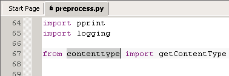
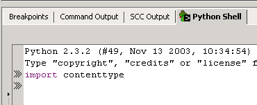
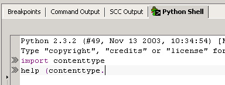
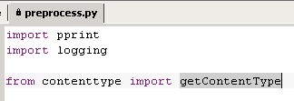
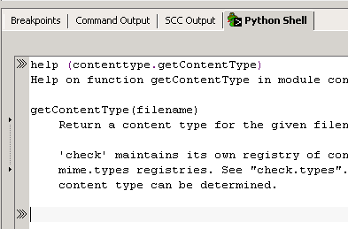

On line 67 of
preprocess.py, select
contenttype.

Press 'F12' ('Command'+'Esc' on Mac OS X) to open the shell.
Enter
import and press 'Ctrl'+'V'. Press 'Enter'
to load the module.

Enter
help ( and press 'Ctrl'+'V' again to paste
contenttype. Add a period.

Press 'F12' ('Command'+'Esc' on Mac OS X) to switch back to
the Editor Pane. Select
getContentType.

Press 'F12' ('Command'+'Esc' on Mac OS X) to switch back to
the interactive shell. Press 'Ctrl'+'V' to paste
getContentType, then enter a closing parenthesis
and press 'Enter'.